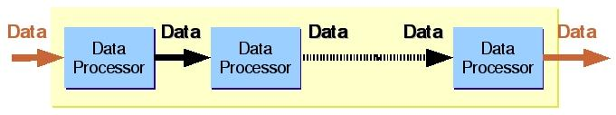

See: Description
| Interface | Description |
|---|---|
| Data |
Implements the interface for all Data objects that passes between
DataProcessors.
|
| DataProcessor |
A processor that performs a signal processing function.
|
| SignalListener |
The listener interface for being informed when a
Signal is generated. |
| Class | Description |
|---|---|
| AutoCepstrum |
Cepstrum is an auto-configurable DataProcessor which is used to compute a
specific cepstrum (for a target acoustic model) given the spectrum.
|
| BaseDataProcessor |
An abstract DataProcessor implementing elements common to all concrete DataProcessors, such as name, predecessor, and
timer.
|
| DataBlocker |
A
DataProcessor which wraps incoming DoubleData-objects into equally size blocks of defined
length. |
| DataEndSignal |
A signal that indicates the end of data.
|
| DataStartSignal |
A signal that indicates the start of data.
|
| DoubleData |
A Data object that holds data of primitive type double.
|
| FloatData |
A Data object that holds data of primitive type float.
|
| FrontEnd |
FrontEnd is a wrapper class for the chain of front end processors.
|
| GainControlProcessor |
Allows to modify the gain of an audio-signal.
|
| Signal |
Indicates events like beginning or end of data, data dropped, quality changed, etc..
|
| Exception | Description |
|---|---|
| DataProcessingException |
Thrown to indicate that a DataProcessor has problems processing incoming Data objects.
|
The front end is modeled as a series of data processors, each of which performs a specific signal processing function on the incoming data. Therefore, the incoming data is transformed as it passes through each data processor. A high-level design of the front end looks like:

For more detailed explanation, please refer to the FrontEnd class documentation.
For information on how to configure the front end using the properties file, please refer to the document Configuring the Front End.
Copyright © 2014. All rights reserved.